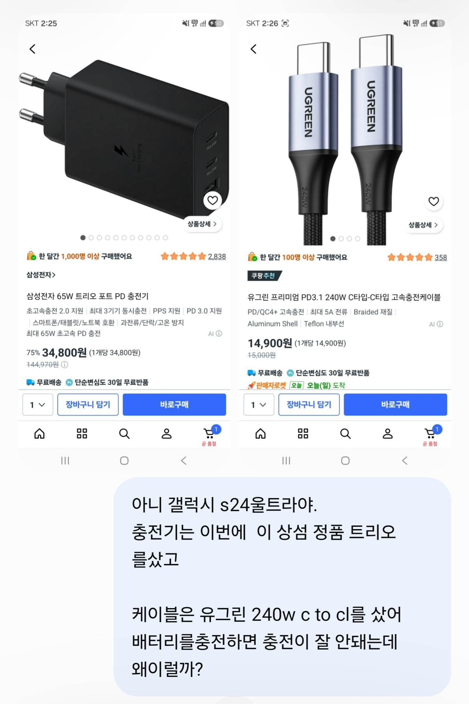
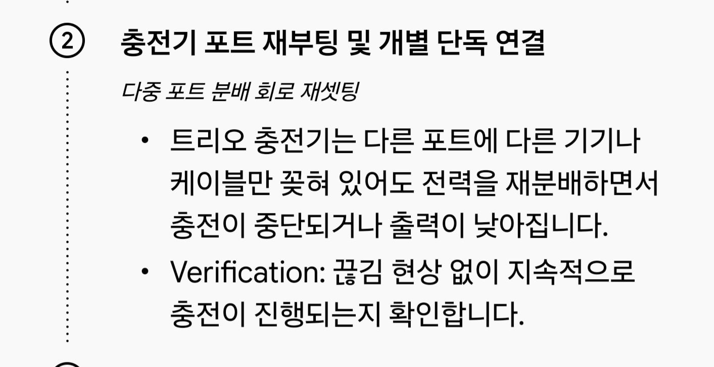
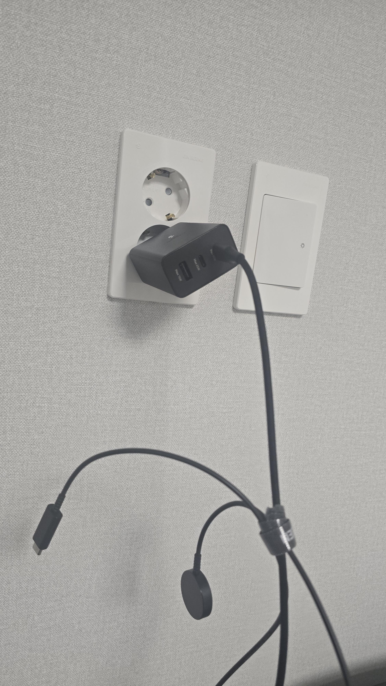
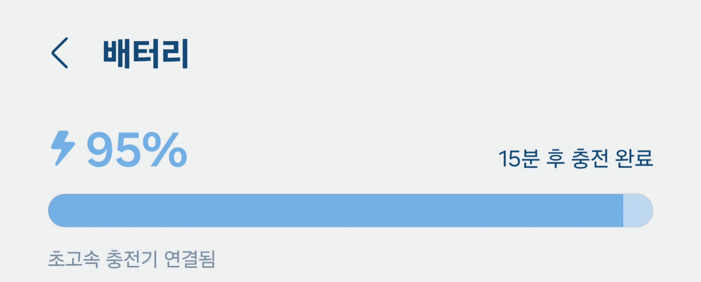
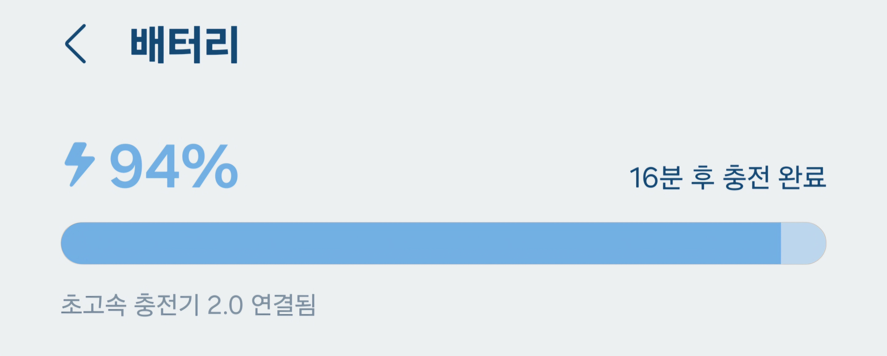

케이블 모두 꼽아놓을시

케이블 1개만 꼽아놓을시 2.0작동!

나 진짜 처음알았짜나..
참고로 뻐킹 지피티는 모르더라..



케이블 모두 꼽아놓을시

케이블 1개만 꼽아놓을시 2.0작동!

나 진짜 처음알았짜나..
참고로 뻐킹 지피티는 모르더라..
못보기도 쉽지 않은디 아직 못보다니
암튼 개드립 하는애들이 남에게 지식으로 잘난체하고 꺼드럭거릴수 있는 기회가 거의 없다보니까 기회만 생기면 피라냐처럼 달려드는 것 ㅇㅇ
심지어 원래 모르던애도 대충 눈치껏 그것도 모르냐고 고로시함
툭키 충전기 쓰면 기기 화면에 현재 사용 와트 나와
위에 댓글 단 애들 저게 왜 저런건지 전혀 이해 못한거 같은데
단순히 케이블이 꽂혀있어서 그런게 아니라 대기전력이 있는 케이블을 꽂아서 문제인거임
워치 충전기 같은 무선충전기나 충전속도를 표시해주는 케이블은 대기전력이 있어서 충전 상태가 아니더라도 꽂혀있는것만으로 멀티포트 PD 충전기에서는 그걸 인식해서 전력 분배를 다시함
갤럭시에서의 초고속 충전 2.0은 3A 이상으로 전류를 먹여줘야하는데 전력분배 때문에 그게 안되니 1.0으로 내려가는거고
아.. 대기전력이 있는 케이블.. 감사감사 첨 알았다 이런건
제미나이 따잇! 여전히 인간 승!
역시 인간이다아아아아앗!!!!!!
제대로 설명해 주는 개붕이는 귀하기에 추천
똑같이 3구 5구 충전기에 총 와트수 같아도 가격차나는게 이런 전력배분 회로 들어가서인것도 있음.
그래서 제품스펙에 적어둔거 확인해서 사야 비싼거 살때 좋은거 살수있음.
싼거? 당연히 없지.
케이블만 꽂아도 저러는건 생각못했는데 첨알았네
사람도 한번에 3가지 일 배분하면 빡친다 아입니꺼
대기하는것도 일 아입니꺼
다 꼽으면 45+20 이딴식이라 너프 먹어서 하나만 꼽아야 65w로 되는 형식이 많긴 함.
충전기, 케이블이 단순 멀티탭, 구리케이블이 아니라 개별 전자제품으로 보면됨. 둘다 칩들어있어서 전기 흐르고 일하고 있음
보통 c타입 두개물리면 안그러는데
워치 충전기만 물리면 이상해지니까
왜그런거지? 했지
근대 이젠 이유를알았다.
그냥 케이블 뽑아보고 되면 아 케이블 꽂아놓으면 안되는거보니까 충전기가 전력 분배치거나 케이블니 문제구나 자동으로 생각되는거 아녀?
케이블이 문제구나 라고생각해서
케이블을 ㅈㄴ 바꿨지
계속바꿔도 내가생각하기에는
문제가있으니까 왜 그런건지 물어봐야지..
https://naver.me/FBMslL7X
3개 동시일땐 35/25/5 로 충전된다고 되어있네
그러면 케이블 3개 다 꽂아놓기만하면 제일 빠르다고 생각했던 1선이 사실 35w였겠군ㅋㅋ
근데 저런 충전가들은 웬만하면 포트 사용갯수에 따라 출력달라진다고 명시해놨을텐데 설명서 잘 안보니?
당연히 w가 나눠지는건아는데
워치충전케이블을 물려놓기만해도 충전으로 인식된다는건 오늘 첨 알았음
무선충전부나 전력표시기가 결합되어있거나 개싸구려 제품은 인식센서가 달려있는게 아니면 꼽는즉시 전력이통하고 작동하게되어있음. 그래서 싸구려케이블들은 충전기에 꼽자마자 꼬다리를 손에대면 근질근질함ㅋㅋ
다포트 어댑터보단 고출력 어댑터에 고출력 케이블을 결합해 기기에 직렬하거나 3in1이나 2in1 충전기를 사용하는걸 추천함
제품 설명서를 봐야하는 이유
케이블을 꽂기만해도 속도낮아지는건 첨알았네 나도
보니까 워치충전기만 그런가봄~
w표시되는 케이블도 그럴 수 있음ㅋㅋ 위에 개붕이가 말해줬지만 대기전력이 있다는건 제품이 꽂혀있지 않아도 전류를 흘려야 하기 때문에 두곳을 충전중인걸로 인식하니까. 무선 충전기 케이블을 꽂으면 항시 전류를 흘리고 있어야 하니 일단 하나는 꼽혀있는거지
난 이제 워치를 올리면
그제서야 전류가 흐른다고생각했는데
애초에 항시 전류가 흐르는 상태라고 생각하니까
충전속도가 느린게 이해가 감
45이상 65 이런걸로 단일 충전기 하나랑
옆에다 이런 말리충전기로 천천히 충전해도되는거 꼽고
비싼기기는 단일 충전기로 싼거는 멀티로 하는중 ㅋㅋ
오
내 충전기는 워치랑 케이블 두개 꼽아두면 충전연결됨 -> 끊김 -> 충전연결됨 -> 끊김 무한 반복 되기도 했음
제미나이 말로는 두 케이블에 전력 분배 하는 칩에 오류가 생겨서 그런다는데
해결방법은 똑같았음 안쓰는 케이블 뽑아두기
이젠 진짜 ai가 모르면 로스트 떼끄날라지 취급임
얼마전에 ai들이 서순 이란 단어 몰라서 노루야캐여에서 나온게 진짜 출처인줄 알고 잘못 안내되니까 그게 펙트라고 믿는 애들 개발작한적도 있고 ㅋㅋ
병신같은 AI가 뭘 알겠냐
맨날 ai도 모른다고 하는말들 보면 웃김
맞음
지금 케이블 2개 물려놨는데
제일쎈 65W 하나만쓸때
초고속충전2.0 이 안될때가 있다는 얘기